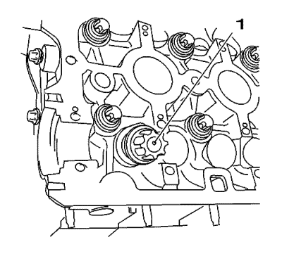
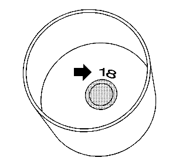
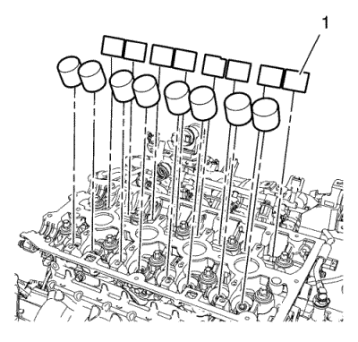

Ajuste del juego de válvula
Herramientas especiales
| • | EN-845 Dispositivo de succión |
| • | EN-6361 Galga de espesores |
| • | EN-6628-A Herramienta de bloqueo |
Si desea informarse sobre herramientas regionales equivalentes, consultar Herramientas especiales .
Procedimiento de desmontaje
- Retire el aparato de ajuste del árbol de levas. Consultar Desmontaje del regulador del actuador de posición del árbol de levas .
- Desmonte la tapa trasera de la correa de la distribución. Consultar Sustitución de la tapa trasera de la correa de distribución .
- Retire el tornillo del sensor de posición del árbol de levas de admisión. Consultar Sustitución del sensor de posición del árbol de levas .
- Retire el tornillo del sensor de posición del árbol de levas de escape. Consultar Sustitución del sensor de posición del árbol de levas .
- Extraiga la herramienta de bloqueo EN-6628-A.
Sujete por el hexágono del árbol de levas.
Procedimiento de ajuste
- Compruebe el juego de las 2 válvulas de admisión del cilindro 1.
| 1.1. | Gire el árbol de levas de admisión en el sentido de giro del motor por el hexágono del árbol de levas hasta que las levas del cilindro 1 estén en la posición de prueba. |
| 1.2. | Inserte la galga de espesores EN-6361 y compruebe el juego. |
Anote el resultado.
- Compruebe el juego de las 2 válvulas de admisión del cilindro 3.
| 2.1. | Gire el árbol de levas de admisión en el sentido de giro del motor por el hexágono del árbol de levas hasta que las levas del cilindro 3 estén en la posición de prueba. |
| 2.2. | Inserte la galga de espesores EN-6361 y compruebe el juego. |
Anote el resultado.
- Compruebe el juego de las 2 válvulas de admisión del cilindro 4.
| 3.1. | Gire el árbol de levas de admisión en el sentido de giro del motor por el hexágono del árbol de levas hasta que las levas del cilindro 4 estén en la posición de prueba. |
| 3.2. | Inserte la galga de espesores EN-6361 y compruebe el juego. |
Anote el resultado.
- Compruebe el juego de las 2 válvulas de admisión del cilindro 2.
| 4.1. | Gire el árbol de levas de admisión en el sentido de giro del motor por el hexágono del árbol de levas hasta que las levas del cilindro 2 estén en la posición de prueba. |
| 4.2. | Inserte la galga de espesores EN-6361 y compruebe el juego. |
Anote el resultado.
- Cuando sustituya el árbol de levas de escape, compruebe el juego de las válvulas de escape.
- Compruebe el juego de las 2 válvulas de escape del cilindro 4.
| 6.1. | Gire el árbol de levas de escape en el sentido de giro del motor por el hexágono del árbol de levas hasta que las levas del cilindro 4 estén en la posición de prueba. |
| 6.2. | Inserte la galga de espesores EN-6361 y compruebe el juego. |
Anote el resultado.
- Compruebe el juego de las 2 válvulas de escape del cilindro 2.
| 7.1. | Gire el árbol de levas de escape en el sentido de giro del motor por el hexágono del árbol de levas hasta que las levas del cilindro 2 estén en la posición de prueba. |
| 7.2. | Inserte la galga de espesores EN-6361 y compruebe el juego. |
Anote el resultado.
- Compruebe el juego de las 2 válvulas de escape del cilindro 1.
| 8.1. | Gire el árbol de levas de escape en el sentido de giro del motor por el hexágono del árbol de levas hasta que las levas del cilindro 1 estén en la posición de prueba. |
| 8.2. | Inserte la galga de espesores EN-6361 y compruebe el juego. |
Anote el resultado.
- Compruebe el juego de las 2 válvulas de escape del cilindro 3.
| 9.1. | Gire el árbol de levas de escape en el sentido de giro del motor por el hexágono del árbol de levas hasta que las levas del cilindro 3 estén en la posición de prueba. |
| 9.2. | Inserte la galga de espesores EN-6361 y compruebe el juego. |
Anote el resultado.

Nota: Observe el orden de desmontaje 1-4.
- Desmonte los 4 tornillos de los soportes de cojinete de los árboles de levas.
- Suelte el soporte de cojinete golpeándolo suavemente con un martillo de plástico.
- Desmonte el primer soporte de cojinete de los árboles de levas (5).
Nota: Marque los sombreretes de cojinete del árbol de levas de escape antes del desmontaje.
- Desmonte los sombreretes de cojinete del árbol de levas 1-4, desde el exterior hacia el interior en espiral, en pasos de 1/2 a 1 vuelta.
- Desmonte la tapa de cojinete del árbol de levas de la culata.
- Desmonte el árbol de levas de admisión.
Nota: Marque los sombreretes de cojinete del árbol de levas de admisión antes del desmontaje.
- Desmonte los sombreretes de cojinete del árbol de levas 1-4, desde el exterior hacia el interior en espiral, en pasos de 1/2 a 1 vuelta.
- Desmonte la tapa de cojinete del árbol de levas de la culata.
- Desmonte el árbol de levas de escape.

- Con el dispositivo EN-845 (1), desmonte los 16 taqués de válvulas.

- Determine el tamaño de los taqués.
| 20.1. | Medida del taqué montado: 3,12 mm (0,123 pulg.), número de identificación 12. |
| 20.2. | Valor medido entre levas y taqués +0,31 mm (0,012 pulg.) = 3,43 mm (0,135 pulg.). |
| 20.3. | Valor requerido, juego de válvula - 0,25 mm (0,010 pulg.). |
| | Nota: El número de identificación, flecha, está en el interior del taqué de válvula. |
| 20.4. | Medida de un taqué nuevo = 3,18 mm (0,125 pulg.), número de identificación 18. |
| 20.5. | Utilice un taqué de válvula con este tamaño o el que más se le aproxime. |
Procedimiento de montaje
Nota: Observe la alineación correcta.
Nota: Cubra las superficies de deslizamiento con aceite de motor nuevo.

- Monte los 16 taqués (1) con el dispositivo de succión EN 845
- Monte los árboles de levas. Consultar Sustitución del árbol de levas .
| © Copyright Chevrolet Europe. All rights reserved |